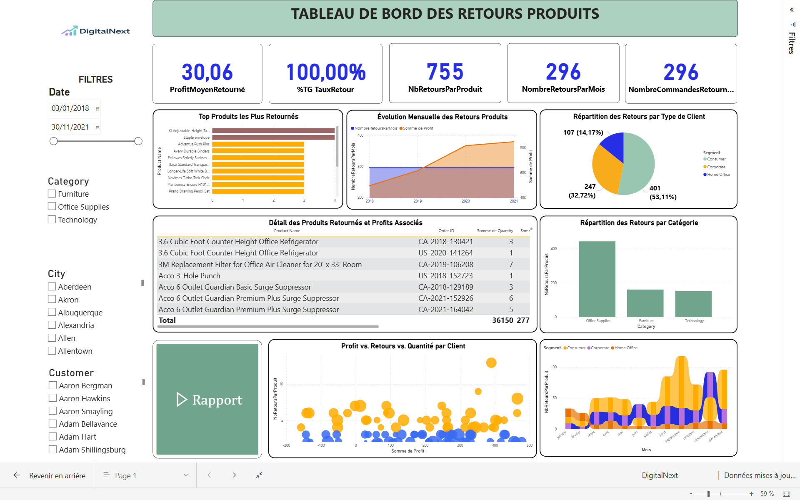

DigitalNext – Dashboard Retour Produits

🎯 Objectif :
Analyser les retours produits afin de réduire les pertes financières,
comprendre les causes, et prioriser les actions correctives selon les catégories les plus touchées.
🚀 Particularité :
Intégration d’une page dédiée à l’export PDF automatisé via Power Automate.
Les équipes reçoivent automatiquement un rapport mensuel complet, réduisant de 70 %
le temps de reporting manuel.
📊 Indicateurs & Analyses :
- Volume des retours (par mois / catégorie / client)
- Analyse géographique des zones problématiques
- Top produits les plus retournés
- Pertes financières associées aux retours
- Analyse croisée : profit / quantité / retours
- Détection automatique des produits “à risque”
🛠️ Outils & Compétences :
Power BI (KPI, storytelling), DAX (calculs avancés),
Power Query (nettoyage), Power Automate (automatisation),
UX Design (interface claire + priorité aux décisions).